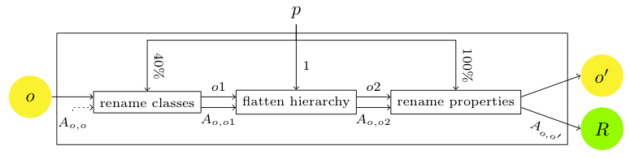
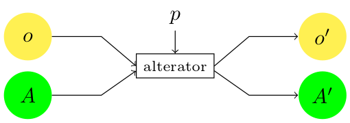
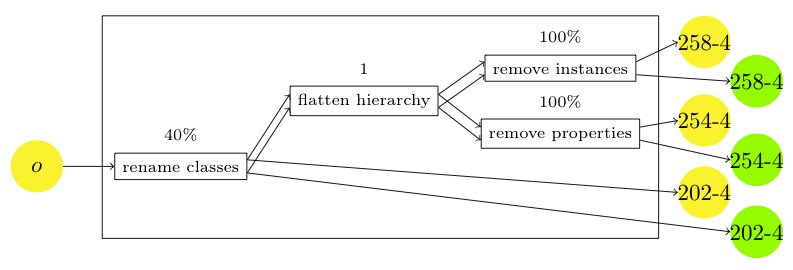

Alignment API: test generation framework
The Alignment API implementation offers facilities to
automatically generate test sets that can be used for
evaluating alignments.
These facilities work only on OWL ontologies and are dependent on
the Jena API (which is included in the API lib directory).
It allows for generating altered ontologies from a seed ontology
and generating the reference alignment between the two ontologies).
Generating tests
Generating tests from the command line
It is possible to use the command line command TestGen in
order to generate tests.
It can be invoked for generating only one test:
$ java -Xmx1200m -cp $JAVALIB/procalign.jar fr.inrialpes.exmo.align.cli.TestGen -u outputurl -o outputdir -Dparameter=value seedontology
such that:
- seed ontology is the ontology which is altered for producing the test;
- outputurl is the url prefix that will be used for the generated ontology;
- outputdir is the directory in which the test will be generated;
- -Dparameter=value are the parameters used for generating this tests (see Alterator section below).
For instance:
$ java -Xmx1200m -cp $JAVALIB/procalign.jar fr.inrialpes.exmo.align.cli.TestGen -u http://example.com/mynewtest -o mynewtest -DremoveClasses=.4 -DnoHierarchy=1. -DrenameProperties=1. biblio.owl
applies the modification of the following figure:

It may also be used for generating a whole test set (see below) by:
$ java -Xmx1200m -cp $JAVALIB/procalign.jar fr.inrialpes.exmo.align.cli.TestGen -t testsetclass -u outputurl -o outputdir seedontology
In which, testsetclass is the class name of an implementation
of TestSet (see below) to be used for generating a testset.
For instance:
$ java -Xmx1200m -cp $JAVALIB/procalign.jar fr.inrialpes.exmo.align.cli.TestGen -t fr.inrialpes.exmo.align.gen.BenchmarkGenerator -u http://example.com/mynewtestset -o mynewtestset -Dcontinuous=1 biblio.owl
generates part of the initial OAEI benchmarks.
Generating tests from Java
The equivalent to the command line invokations may be obtained in Java
by the simple:
TestGenerator tg = new TestGenerator();
tg.setDirPrefix( dir );
tg.setURLPrefix( url );
tg.modifyOntology( fileName, (Properties)null, testNumber, params );
for generating only one test, and
TestSet gb = new BenchmarkGenerator();
gb.generate( params );
for generating a test set (here BenchmarkGenerator).
Ontology alterators
The tests are generated from the notion of Alterators, instances of
the fr.inrialpes.exmo.align.gen.Alterator.
Ontology alterators are classes, implementing
the Alterator interface.

An alterator, takes as input an ontology (Jena OntModel) and an
alignment (Alignment) and generates an altered ontology and
alignment. Following the schema of the figure.
Predefined alterators
We provide a description of the alterators currently implemented in the Alignment API.
Their functional description is given at the level of OWL, however, the actual implementation largely differs by taking advantage of different internal structures referring to an actual ontology model. Hence, sometimes modifications are applied on the OWL structure, and sometimes they are applied at the level of triples. However, the final model and alignments are generated at the end of the process. This is only at the end of the process that the entities are assigned a final URI.
Parameters are key-value pairs defining the degree or modalities of alteration.
The priority is expressed by a level such that modifications of lower level must be applied before modifications of higher level.
- EmptyModification
-
Class: fr.inrialpes.exmo.align.gen.alt.EmptyModification
No parameters
Result: generates a test in which the initial ontology is not altered. This test is used in test sets, for generating as initial identity alignment.
Functional description: For each class and each property in the input ontology, creates a correspondence with equivalence between this entity and itself.
Priority: 0
- RemoveClasses
-
Class: fr.inrialpes.exmo.align.gen.alt.RemoveClasses
Parameters: removeClasses=p
Result: removes p% of classes.
Functional description: Selects randomly p% of classes to suppress from the ontology.
For each of these classes,
% removeClass
attaches, directly, its subclasses to its superclasses (including constraints, i.e., anonymous Restriction classes);
attaches, directly, its instances to its superclasses;
converts all restrictions involving it (allValuesFrom, someValueFrom) with its superclasses;
% changeDomainRange
converts all property restrictions involving it (domain, range) with its superclasses;
remove the class.
% alignment.remove
Updates the alignment by suppressing all correspondences involving the suppressed classes.
Priority: 1
- RemoveComments
-
Class: fr.inrialpes.exmo.align.gen.alt.RemoveComments
Parameters: removeComments=p
Result: removes p% of comments.
Functional description: Selects randomly and independently from the ontology p% of classes, properties and individuals whose comments will be suppressed. Removes the comments of each selected entity.
The alignment is not modified.
Priority: 2
- RemoveIndividuals
-
Class: fr.inrialpes.exmo.align.gen.alt.RemoveIndividuals
Parameters: removeIndividuals=p
Result: removes p% of individuals.
Functional description: Selects randomly p% of individuals to suppress from the ontology.
Suppresses from the ontology model all statements using these individuals, either as subject or object.
The alignment is not modified, because it does not contain individuals.
Priority: 2
- RemoveProperties
-
Class: fr.inrialpes.exmo.align.gen.alt.RemoveProperties
Parameters: removeProperties=p
Result: removes p% of properties.
Functional description: Selects randomly p% of properties to suppress from the ontology.
For each of these properties,
remove all restrictions (allValuesFrom, someValuesFrom) involving it,
remove all assertions involving it.
% alignment.remove
Updates the alignment by suppressing all correspondences involving the suppressed properties.
Priority: 2
- RemoveRestrictions
-
Class: fr.inrialpes.exmo.align.gen.alt.RemoveRestrictions
Parameters: removeRestrictions=p
Result: removes p% of restriction.
Functional description: Selects randomly p% of properties restrictions to suppress from the ontology.
For each of these restrictions, remove it from the model.
The alignment is not modified.
Priority: 3
- RenameClasses
-
Class: fr.inrialpes.exmo.align.gen.alt.RenameClasses
Parameters: renameClasses=p, renameMethod=m
Result: renames p% of classes depending on the requested method m (random strings, translation, synonyms) [default: random]
Functional description: Selects randomly p% of classes from the ontology to rename.
For each of these classes, create a new name depending on the selected m and replace its rdfs:label by the new name.
For each triple of the model, all URI fragments are replaced if necessary by the corresponding new name.
Each correspondence of the alignment involving a renamed class is replaced by the corresponding new URI.
Priority: 4
- RenameProperties
-
Class: fr.inrialpes.exmo.align.gen.alt.RenameProperties
Parameters: renameProperties=p, renameMethod=m
Result: renames p% of properties depending on the requested method m (random strings, translation, synonyms) [default: random]
Functional description: Selects randomly p% of properties from the ontology to rename.
For each of these properties, create a new name depending on the selected m.
For each triple of the model, all URI fragments are replaced if necessary by the corresponding new name.
Each correspondence of the alignment involving a renamed property is replaced by the corresponding new URI.
Priority: 4
- AddClasses
-
Class: fr.inrialpes.exmo.align.gen.alt.AddClasses
Parameters: addClasses=p
Result: adds p% classes.
Functional description: Selects randomly p% of classes from the ontology to add a subclass to.
For each of these classes, generates randomly a new name; creates a new subclass of the selected class with this name.
The alignment is not modified.
Priority: 5
- AddProperties
-
Class: fr.inrialpes.exmo.align.gen.alt.AddProperties
Parameters: addProperties=p
Result: adds p% properties.
Functional description: Selects randomly p% of properties from the ontology to add.
For each of these properties, generates randomly a new name.
For half of these new properties, creates an ObjectProperty: selects randomly a domain and range among the classes and assign them to this property.
For the other half of these new properties, creates a DatatypeProperty: selects randomly a domain among the classes and assign it to this property. range is set to xsd:string.
The alignment is not modified.
Priority: 5
- FlattenLevel
-
Class: fr.inrialpes.exmo.align.gen.alt.FlattenLevel
Parameters: levelFlattened=n
Result: removes all classes of level n (their subclasses are directly connected to their superclasses).
Functional description:
% This code should be fully rewrited!
For each class of that level,
attaches, directly, its subclasses to its superclasses (including constraints, i.e., anonymous Restriction classes);
attaches, directly, its instances to its superclasses;
% checkClassesRestrictions
converts all restrictions involving it (allValuesFrom, someValueFrom) with its superclasses;
% changeDomainRange
converts all property restrictions involving it (domain, range) with its superclasses;
remove the class.
Updates the alignment by suppressing all correspondences involving the suppressed classes.
Priority: 6
- SuppressHierarchy
-
Class: fr.inrialpes.exmo.align.gen.alt.SuppressHierarchy
No parameter%noHierarchy
Result: suppresses all subclasses relations (but to owl:Thing)
Functional description: Suppresses all subClassOf assertions towards other named classes (assertions towards Restrictions remain).
The alignment is not modified.
Priority: 7
Adding new alterators
The alterator interface is rather complex.
However, most of the functions of alterators are available in
the BasicAlterator, so that creating a new alterator requires
only to write the modify( Properties ) method if it extends
BasicAlterator.
An alterator follows a particular lifecycle:
Creation
The Alterator is created either:
- from a seed ontology and generate the alignment between this ontology itself
- from a previous alterator from which it will take the output ontology and alignment as input.
So a "virtual" constructor should be provided in which the alterator
is created from a previous alterator:
public Alterator( Alterator om );
Once this has been done, it is possible to retrieve the namespace of
the input ontology (which is the target of the previous alignment if
an alterator has been used for creating the alignment):
public String getNamespace();
and the namespace of the source ontology in the input alignment
public String getBase();
Modification
The modify method applies the alteration to the input:
public Alterator modify( Properties params );
The results are kept in internal structures which, in the case
of BasicAlterator have the following accessors:
public Properties getProtoAlignment();
public OntModel getProtoOntology();
public ClassHierarchy getHierarchy();
Relocation
It is often useful to relocate the results, i.e., to change their
namespaces in both the ontologies and alignments to output. This is
achieved with the following methods (the namespaces are those of the
source and target ontologies respectively):
public void relocateTest( String namespace1, String namespace2 );
public void relocateTest( String namespace2 );
Exporting the results
Finally, results can be obtained through the two following primitives:
public Alignment getAlignment();
public OntModel getModifiedOntology();
Test sets
Full test sets can be generated from one seed ontology (see Figure). For that
purpose, the test set is defined through a
structure which describes how a test is generated from scratch or from
other tests in the test set.

From this structure it is possible to generate the test set with
different modalities which are specified through parameters.
Predefined test sets
Benchmark generator
The BenchmarkGenerator class is an example of a whole test set
defined at once.
It combines various alterators in a specified way.
This can be applied to any seed ontology (that Jena
is able to parse).
Adaptive benchmark generator
The DiscriminatGenerator class is a template to generate
a test set altering regularly one or several dimensions (each one
represented by an alterator).
Hidden ontology generator
Not available yet.
Adding new test sets
Designing a whole test set can be achieved, as it is done for
Benchmarks, by extending the TestSet abstract class and creating
a hierarchy of tests (each one built from another; but this can be
achieved by having all tests generated from the init ontology).
The only abstract method is:
public abstract void initTestCases( Properties params );
It creates a structure comprising the test cases as a hierarchy with
an initial test (which will bear the initial ontology):
TestCase initTests( String labelInitTest );
and other tests derived from the initial one through alterations:
void addTestChild( String labelParentTest, String labelNewTest,
Properties alterationSpecification );
initTestCases is only used for creating this structure which
will be later processed to generate a particular test set from a precise
seed ontology and various modalities (in particular if each test will
be generated intependently of the others (random) or if they will be
generated incrementally by further alterating previous tests (continuous).
Ontology network alterators
Ontology network alterators obey to the OntologyNetworkWeakener interface.
This interface is very simple since it consists of one single
method: weaken taking as argument an onology network, an int
(absolute value) or a double (percentage) characterising the amount of
alteration and a set of optional parameters in a Properties
object.
Each alterator returns a brand new ontology network with eventually
modified alignments.
Ontology network alterators cannot be used from command line.
Predefined network alterators
Some alterators are available with the Alignment API implementation:
- NetworkAlignmentDropper
- randomly drops n% of all alignments in the network. n is a number between 0. and 1.
- NetworkAlignmentWeakener
- suppresses n% of the correspondences at random in each alignments. n is a number between 0. and 1.
A threshold parameter tells if the corrrespondences are suppressed at random (false) of by suppressing the n% of lower confidence (true)
- NetworkCorrespondenceDropper
- suppresses n% of the correspondences at random in all alignments (globally). n is a number between 0. and 1. a threshold parameter tells if the corrrespondences are suppressed at random (false) of by suppressing the n% of lower confidence (true).
- NetworkDeconnector
- (Not implemented) suppresses alignments in the ontology network so that it retain n-connectivity, i.e., any pairs of ontologies connected by less than n alignments are still connected through at most n alignments.
http://alignapi.gforge.inria.fr/testgen.html
$Id: testgen.html 1789 2012-11-05 22:48:10Z euzenat $